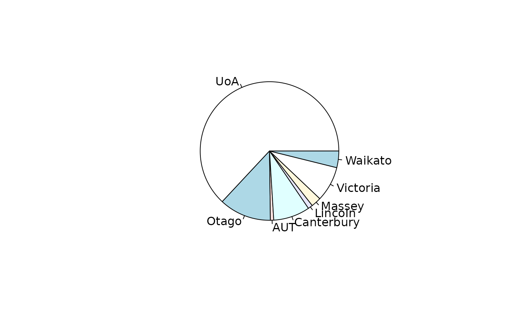

universities.RdTimes Higher Education World University Rankings
data(universities)A hyper2 object that gives a likelihood function for
ranking of NZ universities
The data is taken directly from the THE website, specifying “New Zealand”:
Object universities is a hyper2 support function and
universities_table a data frame.
These objects can be generated by running script
inst/universities.Rmd, which includes some further discussion and
technical documentation, and creates file universities.rda which
resides in the data/ directory.
summary(universities)
#> A hyper2 object of size 8.
#> pnames: UoA Otago AUT Canterbury Lincoln Massey Victoria Waikato
#> Number of brackets: 70
#> Sum of powers: 0
#>
#> Table of bracket lengths:
#> 1 2 3 4 5 6 7 8
#> 8 9 12 13 14 9 4 1
#>
#> Table of powers:
#> -40 -27 -17 -15 -14 -10 -7 -6 -5 -4 -3 -2 -1 13 16 29 38 39 40
#> 1 1 1 1 1 1 2 1 3 4 9 17 20 1 1 1 1 1 3
psubs(universities,c("AUT","UoA"),c("University of Auckland","Auckland University of Technology"))
#> log(Auckland University of Technology^40 * (Auckland University of
#> Technology + Canterbury + Lincoln + Massey + Otago + University of
#> Auckland + Victoria + Waikato)^-40 * (Auckland University of Technology
#> + Canterbury + Lincoln + Massey + Otago + Victoria + Waikato)^-7 *
#> (Auckland University of Technology + Canterbury + Lincoln + Massey +
#> University of Auckland + Victoria + Waikato)^-3 * (Auckland University
#> of Technology + Canterbury + Lincoln + Massey + Victoria + Waikato)^-2
#> * (Auckland University of Technology + Canterbury + Lincoln + Otago +
#> Victoria + Waikato)^-2 * (Auckland University of Technology +
#> Canterbury + Massey + Otago + Victoria + Waikato)^-2 * (Auckland
#> University of Technology + Canterbury + Otago + Victoria + Waikato)^-1
#> * (Auckland University of Technology + Lincoln + Massey + Otago +
#> University of Auckland + Victoria + Waikato)^-3 * (Auckland University
#> of Technology + Lincoln + Massey + Otago + Victoria + Waikato)^-1 *
#> (Auckland University of Technology + Otago + Victoria + Waikato)^-1 *
#> Canterbury^40 * (Canterbury + Lincoln + Massey + Otago + University of
#> Auckland)^-2 * (Canterbury + Lincoln + Massey + Otago + University of
#> Auckland + Victoria)^-3 * (Canterbury + Lincoln + Massey + Otago +
#> University of Auckland + Victoria + Waikato)^-27 * (Canterbury +
#> Lincoln + Massey + Otago + University of Auckland + Waikato)^-7 *
#> (Canterbury + Lincoln + Massey + University of Auckland)^-5 *
#> (Canterbury + Lincoln + Massey + University of Auckland + Victoria)^-3
#> * (Canterbury + Lincoln + Massey + University of Auckland + Victoria +
#> Waikato)^-17 * (Canterbury + Lincoln + Massey + University of Auckland
#> + Waikato)^-15 * (Canterbury + Lincoln + Massey + Victoria +
#> Waikato)^-2 * (Canterbury + Lincoln + Otago + University of Auckland +
#> Victoria + Waikato)^-1 * (Canterbury + Lincoln + Otago + Victoria +
#> Waikato)^-2 * (Canterbury + Massey + Otago + University of Auckland)^-2
#> * (Canterbury + Massey + Otago + University of Auckland + Waikato)^-3 *
#> (Canterbury + Massey + Otago + Victoria + Waikato)^-1 * (Canterbury +
#> Massey + University of Auckland + Victoria + Waikato)^-3 * (Canterbury
#> + Massey + University of Auckland + Waikato)^-2 * (Canterbury + Otago +
#> University of Auckland)^-2 * (Canterbury + University of Auckland)^-1 *
#> Lincoln^16 * (Lincoln + Massey)^-1 * (Lincoln + Massey + Otago +
#> University of Auckland)^-2 * (Lincoln + Massey + Otago + University of
#> Auckland + Victoria)^-1 * (Lincoln + Massey + Otago + University of
#> Auckland + Victoria + Waikato)^-5 * (Lincoln + Massey + Otago +
#> University of Auckland + Waikato)^-3 * (Lincoln + Massey + Otago +
#> Victoria + Waikato)^-1 * (Lincoln + Massey + University of
#> Auckland)^-10 * (Lincoln + Massey + University of Auckland +
#> Victoria)^-2 * (Lincoln + Massey + University of Auckland + Victoria +
#> Waikato)^-2 * (Lincoln + Massey + University of Auckland + Waikato)^-14
#> * (Lincoln + Massey + Victoria)^-2 * (Lincoln + Massey + Victoria +
#> Waikato)^-3 * (Lincoln + Massey + Waikato)^-1 * (Lincoln + Otago +
#> University of Auckland + Victoria + Waikato)^-1 * (Lincoln + Otago +
#> University of Auckland + Waikato)^-2 * (Lincoln + Otago + Victoria)^-1
#> * (Lincoln + Otago + Victoria + Waikato)^-2 * (Lincoln + Otago +
#> Waikato)^-1 * (Lincoln + University of Auckland)^-6 * (Lincoln +
#> University of Auckland + Waikato)^-4 * (Lincoln + Victoria)^-4 *
#> (Lincoln + Victoria + Waikato)^-1 * (Lincoln + Waikato)^-1 * Massey^29
#> * (Massey + Otago + University of Auckland + Waikato)^-1 * (Massey +
#> Otago + Victoria + Waikato)^-1 * (Massey + University of Auckland)^-4 *
#> (Massey + University of Auckland + Victoria)^-1 * (Massey + University
#> of Auckland + Victoria + Waikato)^-3 * (Massey + University of Auckland
#> + Waikato)^-4 * Otago^40 * (Otago + University of Auckland)^-1 * (Otago
#> + University of Auckland + Waikato)^-1 * (Otago + Victoria +
#> Waikato)^-2 * University of Auckland^13 * (University of Auckland +
#> Waikato)^-5 * Victoria^39 * (Victoria + Waikato)^-2 * Waikato^38)
pie(universities_maxp)
